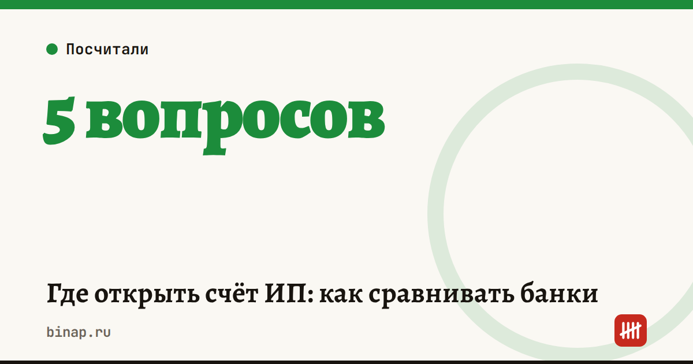

Где открыть счёт ИП: как сравнивать банки

Самый дешёвый тариф не всегда самый выгодный. Сравнивайте не стоимость обслуживания, а то, сколько вы заплатите за свой обычный месяц: абонентская плата, платёжки, переводы себе на карту, наличные и эквайринг вместе.
Коротко
- Считайте итог за месяц по своим оборотам, а не абонентскую плату из рекламы.
- Главные статьи расходов у ИП — переводы себе на карту, снятие наличных и эквайринг.
- Сравните 3–4 банка на одних и тех же цифрах прошлого месяца.
- Держите второй бесплатный счёт в другом банке на случай блокировки по 115-ФЗ.
- Банки проверяют операции ИП с наличными независимо от суммы — меньше наличных, меньше вопросов.
Сроки, изменения и разборы для ИП и самозанятых — каждое утро в Telegram и MAX. Подпишитесь, чтобы не пропустить.
Пять вопросов перед выбором
- Сколько платёжек в месяц? Если больше 10 — смотрите тарифы, где они включены.
- Переводите ли себе на карту? Это самая дорогая статья у ИП. Ищите тарифы с бесплатным лимитом переводов физлицам.
- Нужна ли наличка? Снятие наличных может стоить до нескольких процентов. К тому же банк вправе спросить, откуда наличные и на что вы их тратите — подробнее в статье банки проверяют любые наличные ИП и ООО.
- Принимаете оплату картами? Тогда сравнивайте счёт вместе с эквайрингом — как посчитать реальную ставку, разобрали в статье эквайринг для ИП.
- Есть ли запасной счёт? Блокировки по 115-ФЗ случаются даже у честного бизнеса. Второй бесплатный счёт в другом банке — дешёвая страховка.
Как сравнить тарифы: пример
Расчёт редакции на условных тарифах двух банков. ИП за месяц: 15 платёжек, переводы себе на карту 300 000 ₽, снятие наличных нет.
| Банк А | Банк Б | |
|---|---|---|
| Абонентская плата | 0 ₽ | 1 500 ₽ |
| 15 платёжек | 15 × 100 ₽ = 1 500 ₽ | включены |
| Перевод себе 300 000 ₽ | 1,5% сверх 150 000 ₽ = 2 250 ₽ | бесплатно до 400 000 ₽ |
| Итого за месяц | 3 750 ₽ | 1 500 ₽ |
«Бесплатный» тариф в этом примере дороже платного в 2,5 раза. С вашими оборотами результат может быть обратным — поэтому считайте на своих цифрах.
Что проверить в тарифе и договоре
| Пункт | Почему важно |
|---|---|
| Лимит переводов физлицам и цена сверх него | главная скрытая статья расходов |
| Цена снятия наличных | может доходить до нескольких процентов |
| Условия «бесплатного» тарифа | бесплатно часто только при нулевых оборотах |
| Платёжки и зарплатный проект | при первых сотрудниках расходы растут |
| Эквайринг в пакете или отдельно | дешёвый счёт иногда требует дорогой эквайринг |
| Как банк сообщает о смене тарифов | тарифы пересматривают — следите за письмами |
Что сделать
- Выгрузите выписку за прошлый месяц и выпишите: число платёжек, сумму переводов себе, снятие наличных, оборот по картам.
- Прогоните эти цифры через тарифы 3–4 банков и сравните итог за месяц.
- Откройте второй бесплатный счёт в другом банке как запасной.
- Раз в полгода повторяйте сравнение — тарифы меняются. Почему с 2026 года счёт мог подорожать, — в статье почему подорожал расчётный счёт.
Частые вопросы
Нужен ли ИП расчётный счёт? Закон не обязывает ИП открывать счёт, но без него сложно работать с компаниями, принимать оплату картами и платить налоги без лишних шагов. Самозанятым счёт не обязателен — подробнее в статье как стать самозанятым.
Можно ли переводить деньги со счёта ИП себе на карту? Да, это ваши деньги после уплаты налогов. Но у многих банков переводы физлицам сверх лимита платные — это главный пункт при сравнении тарифов.
Зачем второй счёт? Если основной банк заблокирует операции по 115-ФЗ, второй счёт позволит принимать оплату и платить налоги, пока вы разбираетесь. Что делать при блокировке — в статье банк заблокировал счёт по 115-ФЗ.